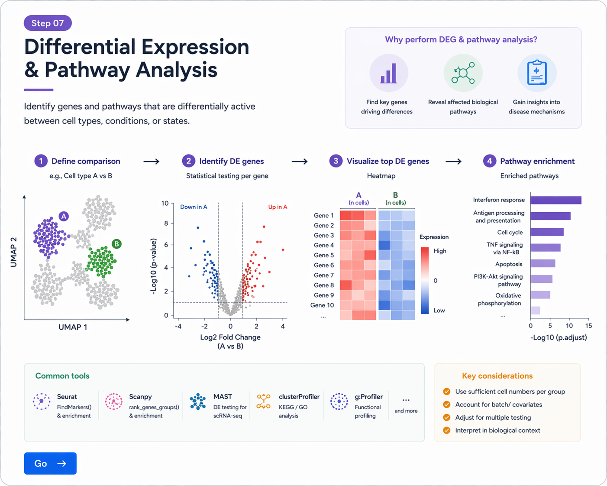

Annotation 이후에는 cluster 간 또는 조건 간 differentially expressed genes (DEGs)를 확인하고, pathway 분석을 통해 해당 세포 집단의 biological meaning을 해석할 수 있습니다.
Seurat에서는 FindMarkers()를 이용해 두 cluster 간 차이를 비교할 수 있습니다.
deg_cluster <- FindMarkers(
obj,
ident.1 = "T cells",
ident.2 = "B cells",
min.pct = 0.25,
logfc.threshold = 0.25
)
head(deg_cluster)
결과 테이블에는 p-value, adjusted p-value, average log2 fold change, 발현 비율 등이 포함됩니다.
같은 cell type 내에서 조건 간 비교를 하고 싶다면, 먼저 특정 세포 유형만 subset한 뒤 비교할 수 있습니다.
tcell_obj <- subset(obj, idents = "T cells")
Idents(tcell_obj) <- "condition"
deg_condition <- FindMarkers(
tcell_obj,
ident.1 = "disease",
ident.2 = "control",
min.pct = 0.25,
logfc.threshold = 0.25
)
head(deg_condition)
상위 유전자를 정리하면 cluster 또는 condition을 구분하는 핵심 유전자를 빠르게 확인할 수 있습니다.
library(dplyr)
deg_cluster %>%
rownames_to_column("gene") %>%
arrange(desc(avg_log2FC)) %>%
head(20)
DEG 결과 중 상위 marker 또는 상위 DEG를 heatmap으로 시각화하면 group 간 차이를 직관적으로 확인할 수 있습니다.
top_genes <- rownames(deg_cluster)[1:20]
DoHeatmap(obj, features = top_genes) + NoLegend()
Volcano plot은 fold change와 statistical significance를 함께 보여주는 대표적 시각화입니다.
library(ggplot2)
library(tibble)
volcano_df <- deg_cluster %>%
rownames_to_column("gene") %>%
mutate(
significant = ifelse(p_val_adj < 0.05 & abs(avg_log2FC) > 0.5, "Yes", "No")
)
ggplot(volcano_df, aes(x = avg_log2FC, y = -log10(p_val_adj), color = significant)) +
geom_point(size = 1.2) +
theme_classic() +
labs(x = "avg_log2FC", y = "-log10 adjusted p-value")
VlnPlot(
obj,
features = c("CD3D", "MS4A1", "EPCAM"),
group.by = "celltype",
ncol = 3
)

DEG 분석으로 차이를 보이는 유전자를 찾고, pathway 분석을 통해 biological function을 해석할 수 있습니다.
DEG 리스트를 이용하면 enrichment 분석을 통해 활성화된 biological process를 확인할 수 있습니다.
library(clusterProfiler)
library(org.Hs.eg.db)
sig_genes <- deg_cluster %>%
rownames_to_column("gene") %>%
filter(p_val_adj < 0.05, avg_log2FC > 0.5) %>%
pull(gene)
gene_df <- bitr(sig_genes,
fromType = "SYMBOL",
toType = "ENTREZID",
OrgDb = org.Hs.eg.db)
ego <- enrichGO(
gene = gene_df$ENTREZID,
OrgDb = org.Hs.eg.db,
ont = "BP",
pAdjustMethod = "BH",
readable = TRUE
)
head(ego)
dotplot(ego)
ORA뿐 아니라 전체 ranked gene list를 사용하는 GSEA도 자주 사용됩니다.
gene_list <- deg_cluster$avg_log2FC
names(gene_list) <- rownames(deg_cluster)
gene_list <- sort(gene_list, decreasing = TRUE)
gsea_res <- gseGO(
geneList = gene_list,
OrgDb = org.Hs.eg.db,
ont = "BP",
keyType = "SYMBOL",
verbose = FALSE
)
head(gsea_res)
ridgeplot(gsea_res)
library(Seurat)
library(dplyr)
library(tibble)
library(clusterProfiler)
library(org.Hs.eg.db)
# 1. cluster 간 DEG
deg_cluster <- FindMarkers(
obj,
ident.1 = "T cells",
ident.2 = "B cells",
min.pct = 0.25,
logfc.threshold = 0.25
)
# 2. 상위 DEG 확인
deg_cluster %>%
rownames_to_column("gene") %>%
arrange(desc(avg_log2FC)) %>%
head(20)
# 3. heatmap
top_genes <- rownames(deg_cluster)[1:20]
DoHeatmap(obj, features = top_genes) + NoLegend()
# 4. violin plot
VlnPlot(obj, features = c("CD3D", "MS4A1", "EPCAM"), group.by = "celltype", ncol = 3)
# 5. enrichment
sig_genes <- deg_cluster %>%
rownames_to_column("gene") %>%
filter(p_val_adj < 0.05, avg_log2FC > 0.5) %>%
pull(gene)
gene_df <- bitr(sig_genes,
fromType = "SYMBOL",
toType = "ENTREZID",
OrgDb = org.Hs.eg.db)
ego <- enrichGO(
gene = gene_df$ENTREZID,
OrgDb = org.Hs.eg.db,
ont = "BP",
pAdjustMethod = "BH",
readable = TRUE
)
dotplot(ego)
FindMarkers()를 이용해 두 그룹을 비교할 수 있습니다.